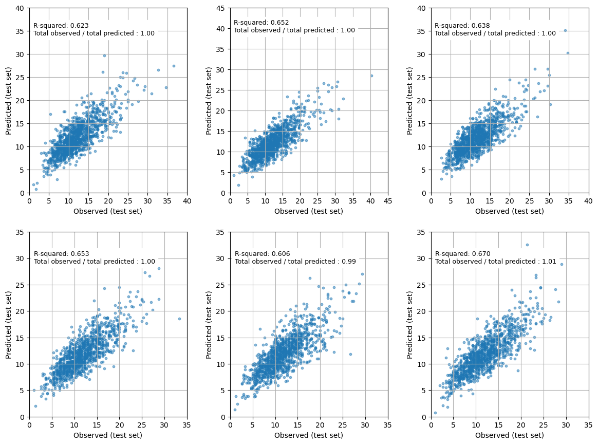

MSOA admissions prediction#
import matplotlib.pyplot as plt
import numpy as np
import pandas as pd
from scipy import stats
from sklearn import metrics
from sklearn.linear_model import LinearRegression
from sklearn.model_selection import KFold
# Turn warnings off to keep notebook tidy
import warnings
warnings.filterwarnings("ignore")
Load data#
data = pd.read_csv('./data/msoa_collated.csv', index_col='MSOA')
# Limit to England data
mask = data['country'] == 'E'
data = data[mask]
data = data.drop('country', axis=1)
data = data.drop('All persons', axis=1)
data.head()
---------------------------------------------------------------------------
FileNotFoundError Traceback (most recent call last)
Cell In[2], line 1
----> 1 data = pd.read_csv('./data/msoa_collated.csv', index_col='MSOA')
3 # Limit to England data
4 mask = data['country'] == 'E'
File ~/miniconda3/envs/geopandas/lib/python3.9/site-packages/pandas/io/parsers/readers.py:912, in read_csv(filepath_or_buffer, sep, delimiter, header, names, index_col, usecols, dtype, engine, converters, true_values, false_values, skipinitialspace, skiprows, skipfooter, nrows, na_values, keep_default_na, na_filter, verbose, skip_blank_lines, parse_dates, infer_datetime_format, keep_date_col, date_parser, date_format, dayfirst, cache_dates, iterator, chunksize, compression, thousands, decimal, lineterminator, quotechar, quoting, doublequote, escapechar, comment, encoding, encoding_errors, dialect, on_bad_lines, delim_whitespace, low_memory, memory_map, float_precision, storage_options, dtype_backend)
899 kwds_defaults = _refine_defaults_read(
900 dialect,
901 delimiter,
(...)
908 dtype_backend=dtype_backend,
909 )
910 kwds.update(kwds_defaults)
--> 912 return _read(filepath_or_buffer, kwds)
File ~/miniconda3/envs/geopandas/lib/python3.9/site-packages/pandas/io/parsers/readers.py:577, in _read(filepath_or_buffer, kwds)
574 _validate_names(kwds.get("names", None))
576 # Create the parser.
--> 577 parser = TextFileReader(filepath_or_buffer, **kwds)
579 if chunksize or iterator:
580 return parser
File ~/miniconda3/envs/geopandas/lib/python3.9/site-packages/pandas/io/parsers/readers.py:1407, in TextFileReader.__init__(self, f, engine, **kwds)
1404 self.options["has_index_names"] = kwds["has_index_names"]
1406 self.handles: IOHandles | None = None
-> 1407 self._engine = self._make_engine(f, self.engine)
File ~/miniconda3/envs/geopandas/lib/python3.9/site-packages/pandas/io/parsers/readers.py:1661, in TextFileReader._make_engine(self, f, engine)
1659 if "b" not in mode:
1660 mode += "b"
-> 1661 self.handles = get_handle(
1662 f,
1663 mode,
1664 encoding=self.options.get("encoding", None),
1665 compression=self.options.get("compression", None),
1666 memory_map=self.options.get("memory_map", False),
1667 is_text=is_text,
1668 errors=self.options.get("encoding_errors", "strict"),
1669 storage_options=self.options.get("storage_options", None),
1670 )
1671 assert self.handles is not None
1672 f = self.handles.handle
File ~/miniconda3/envs/geopandas/lib/python3.9/site-packages/pandas/io/common.py:859, in get_handle(path_or_buf, mode, encoding, compression, memory_map, is_text, errors, storage_options)
854 elif isinstance(handle, str):
855 # Check whether the filename is to be opened in binary mode.
856 # Binary mode does not support 'encoding' and 'newline'.
857 if ioargs.encoding and "b" not in ioargs.mode:
858 # Encoding
--> 859 handle = open(
860 handle,
861 ioargs.mode,
862 encoding=ioargs.encoding,
863 errors=errors,
864 newline="",
865 )
866 else:
867 # Binary mode
868 handle = open(handle, ioargs.mode)
FileNotFoundError: [Errno 2] No such file or directory: './data/msoa_collated.csv'
Split into X and y#
X = data.drop('admissions', axis=1)
y = data['admissions']
Create k-fold splits#
# Set up splits
number_of_splits = 6
skf = KFold(n_splits = number_of_splits, shuffle=True, random_state=42)
X_fields = list(X)
X = X.values
y = y.values
skf.get_n_splits(X, y)
6
Linear regression#
r_square_results = []
observed = []
predictions = []
coefficients = []
# Loop through the k-fold splits
for train_index, test_index in skf.split(X, y):
# Get X and Y train/test
X_train, X_test = X[train_index], X[test_index]
y_train, y_test = y[train_index], y[test_index]
observed.append(y_test)
# Fit model
model = LinearRegression().fit(X_train, y_train)
# get predictions
y_pred = model.predict(X_test)
predictions.append(y_pred)
r_square = metrics.r2_score(y_test, y_pred)
r_square_results.append(r_square)
coefficients.append(model.coef_)
mean_r_square = np.mean(r_square_results)
sem = np.std(r_square_results) / number_of_splits ** 0.5
print (f'Mean r-squared (sem): {mean_r_square:0.3f} ({sem:0.3f})')
Mean r-squared (sem): 0.640 (0.009)
mean_coefficients = np.mean(coefficients, axis=0)
pd.Series(mean_coefficients, index=X_fields)
IMD2019Score 0.011699
0-64 -0.000017
65-79 0.001630
80+ 0.011814
good_health -0.000076
fair health 0.004081
bad health 0.004709
dtype: float64
fig = plt.figure(figsize=(12,9))
for k in range (number_of_splits):
ax = fig.add_subplot(2,3,k+1)
max_val = np.max([np.max(observed[k]), np.max(predictions[k])]) + 1
max_val = 5 + (int(max_val/5)*5)
ratio = np.sum(observed[k]) / np.sum(predictions[k])
ax.scatter(observed[k], predictions[k], s=10, alpha=0.5)
ax.set_xlim(0, max_val)
ax.set_ylim(0, max_val)
ax.grid()
ax.set_xlabel('Observed (test set)')
ax.set_ylabel('Predicted (test set)')
ticks = np.arange(0,max_val+1, 5)
ax.set_xticks(ticks)
ax.set_yticks(ticks)
text = (f'R-squared: {r_square_results[k]:0.3f}\n' +
f'Total observed / total predicted : {ratio:0.2f}')
ax.text(1, max_val-6, text, backgroundcolor='1.0', fontsize=9)
plt.tight_layout(pad=2)
plt.show()

Make predictions for England and Wales#
data = pd.read_csv('./data/msoa_collated.csv', index_col='MSOA')
#Train model on all England data
mask = data['country'] == 'E'
X_train = data[mask]
y_train = data[mask]['admissions']
X_train = X_train[X_fields]
# Fit model and get admissions
model = LinearRegression().fit(X_train, y_train)
predictions = model.predict(data[X_fields])
predicted_admissions = pd.DataFrame(
predictions, columns=['predicted admissions'], index=data.index)
# Get MSOA for each LSOA
lsoa_msoa = pd.read_csv('./data/lsoa_to_msoa.csv')
lsoa_msoa['count'] = 1
lsoa_counts = lsoa_msoa.groupby('msoa11nm').sum()
# Create dataframe with admissions per MSOA and number of LSOA per MSOA
predicted_admissions = \
pd.merge(predicted_admissions, lsoa_counts, left_index=True, right_index=True, how='left')
# Calculate the number of admissions for LSOA in each MSOA
predicted_admissions['LSOA_predicted_admissions'] = \
predicted_admissions['predicted admissions'] / predicted_admissions['count']
# Add predictions per LSOA to all LSOAs
lsoa_predictions = pd.merge(
lsoa_msoa, predicted_admissions, left_on='msoa11nm', right_index=True, how='left')
# Clean table
cols = ['lsoa11cd', 'lsoa11nm', 'msoa11cd', 'msoa11nm', 'country', 'LSOA_predicted_admissions']
lsoa_predictions = lsoa_predictions[cols]
mask = (lsoa_predictions['country'] == 'E' ) | (lsoa_predictions['country'] == 'W')
lsoa_predictions = lsoa_predictions[mask]
lsoa_predictions.head()
| lsoa11cd | lsoa11nm | msoa11cd | msoa11nm | country | LSOA_predicted_admissions | |
|---|---|---|---|---|---|---|
| 0 | E01000001 | City of London 001A | E02000001 | City of London 001 | E | 1.569672 |
| 1 | E01000002 | City of London 001B | E02000001 | City of London 001 | E | 1.569672 |
| 2 | E01000003 | City of London 001C | E02000001 | City of London 001 | E | 1.569672 |
| 3 | E01000005 | City of London 001E | E02000001 | City of London 001 | E | 1.569672 |
| 4 | E01000006 | Barking and Dagenham 016A | E02000017 | Barking and Dagenham 016 | E | 1.767059 |
lsoa_predictions.to_csv('outputs/lsoa_predicted_admissions.csv', index=False)